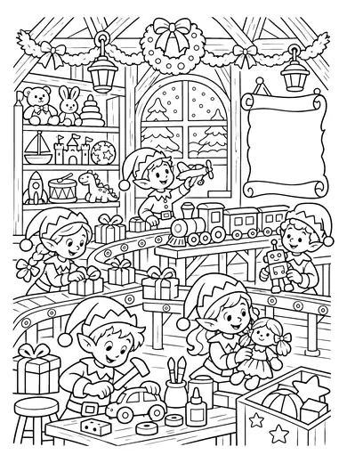
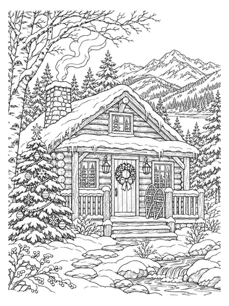

Christmas Coloring Advent Calendar
A new Christmas coloring page to print every day from December 1 to 24. Open today's door, print it, and color.
1 Jolly Santa2
Jolly Santa2 Reindeer in Snow4
Reindeer in Snow4 Ornament Mandala5
Ornament Mandala5 Christmas Tree6
Christmas Tree6 Sleigh Over Rooftops7
Sleigh Over Rooftops7 Patterned Christmas Tree9
Patterned Christmas Tree9 Friendly Snowman10
Friendly Snowman10 Gingerbread Village11
Gingerbread Village11 Cardinal on Holly12
Cardinal on Holly12 Folk Art Reindeer13
Folk Art Reindeer13 Reindeer Face14
Reindeer Face14 Decorating the Tree15
Decorating the Tree15 Fireplace Mantel16
Fireplace Mantel16 Wreath of Everything17
Wreath of Everything17 Gingerbread Friend18
Gingerbread Friend18 Penguin Sledding Party19
Penguin Sledding Party19 Horse-Drawn Sleigh20
Horse-Drawn Sleigh20 Snowflake Lace21
Snowflake Lace21 Stocking Full of Toys22
Stocking Full of Toys22 North Pole Train23
North Pole Train23 Nutcracker and Ornaments24
Nutcracker and Ornaments24 Gingerbread Mansion25
Gingerbread Mansion25 Penguin Trims the Tree
Penguin Trims the Tree
 Jolly Santa2
Jolly Santa2
Santa's Workshop3 Reindeer in Snow4
Reindeer in Snow4 Ornament Mandala5
Ornament Mandala5 Christmas Tree6
Christmas Tree6 Sleigh Over Rooftops7
Sleigh Over Rooftops7
Cabin at Christmas8 Patterned Christmas Tree9
Patterned Christmas Tree9 Friendly Snowman10
Friendly Snowman10 Gingerbread Village11
Gingerbread Village11 Cardinal on Holly12
Cardinal on Holly12 Folk Art Reindeer13
Folk Art Reindeer13 Reindeer Face14
Reindeer Face14 Decorating the Tree15
Decorating the Tree15 Fireplace Mantel16
Fireplace Mantel16 Wreath of Everything17
Wreath of Everything17 Gingerbread Friend18
Gingerbread Friend18 Penguin Sledding Party19
Penguin Sledding Party19 Horse-Drawn Sleigh20
Horse-Drawn Sleigh20 Snowflake Lace21
Snowflake Lace21 Stocking Full of Toys22
Stocking Full of Toys22 North Pole Train23
North Pole Train23 Nutcracker and Ornaments24
Nutcracker and Ornaments24 Gingerbread Mansion25
Gingerbread Mansion25 Penguin Trims the Tree
Penguin Trims the Tree